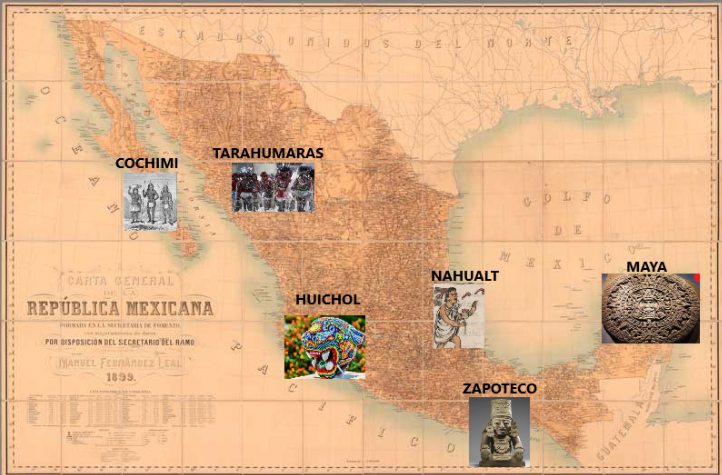

La riqueza cultural de los pueblos indígenas en México es vasta y diversa, resultado de siglos de historia, tradiciones y conocimientos transmitidos de generación en generación. México es uno de los países con mayor diversidad cultural en el mundo, albergando 68 pueblos indígenas reconocidos oficialmente, cada uno con su propio idioma, costumbres, cosmovisión y formas de organización social.
Seleccione el pueblo de su interes en el siguiente mapa:
